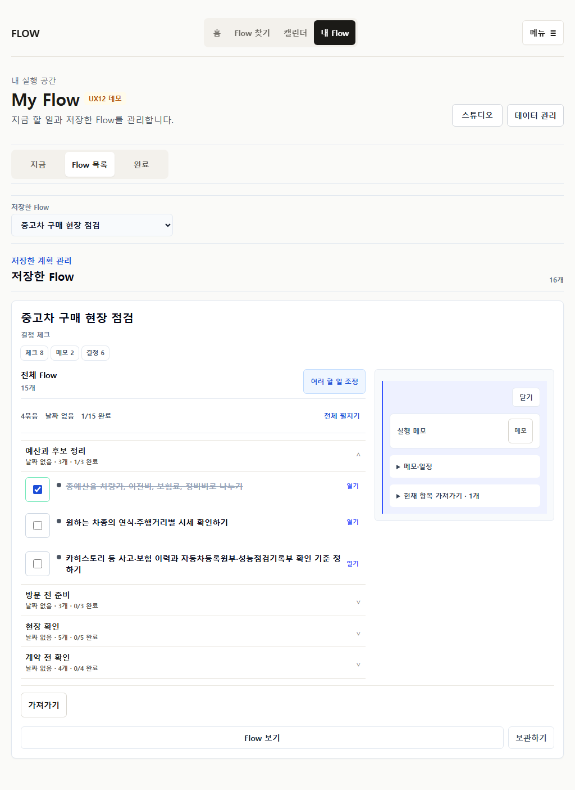

전체 Flow와 실제 결과를 함께 보여준다
compact outline로 무엇이 저장되는지 확인하고, Calendar·Checklist·Sheet·Memo의 실제 데이터를 미리 본다. 수정은 현재 선택한 범위만 열며 저장 후에도 같은 row와 detail을 쓴다.
4.5 / 510 dimensions · hard fail 0 · observed users 0
세 가지 대안
점수는 whole Flow 이해, 조정 발견성, artifact 명확성, 반복 공통성, My Flow 탐색, Calendar 확장, mobile 밀도, 접근성, 재사용성, 회귀 위험을 합산했다.
A. Outline-first
전체 구조와 source 범위는 가장 명확하지만 실제 목적지 결과와 저장 행동이 늦다.
3.9
B. Artifact-first
결과는 빠르지만 어떤 item을 수정하고 무엇이 빠졌는지 알기 어렵다.
3.5 · hard fail 1
C. Hybrid
전체 구조, 실제 결과, contextual adjustment를 하나의 흐름으로 연결한다.
4.5 · selected
선택 구조 시뮬레이션
아래 화면들은 actual content fixture를 사용한 구조 prototype이다. 탭을 바꾸면 같은 grammar가 save-before, routine, My Flow, Calendar에 적용되는 방식을 볼 수 있다.
FLOW홈 · Flow 찾기 · 내 Flow · 캘린더
이이사 D-30 준비
이사일 8월 15일 · 24개 할 일
전체 24날짜 21날짜 없음 3
7월 16일 · D-30
이사 방식 정하기개인 메모 없음열기
필요 없는 물건 정리하기7월 16일열기
8월 1일 · D-14
이사업체 일정 확정견적과 연락처 확인열기
캘린더에 들어갈 일정
21개날짜일정
이사 방식 정하기이사 D-30 준비
이사업체 일정 확정이사 D-30 준비
냉장고 비우기이사 D-30 준비
선택한 일정 조정
이사업체 일정 확정
2030. 8. 1.
FLOW홈 · Flow 찾기 · 내 Flow · 캘린더
운아침 홈트
주 2회 · 화/토 · 8월 31일까지
실행할 일
25분 아침 운동영상과 중단 기준은 상세에서 확인열기
자료 · Allblanc 운동 영상열기
다가오는 회차
6개 표시25분 아침 운동오전 7:30 · 완료 체크
25분 아침 운동오전 7:30 · 완료 체크
25분 아침 운동오전 7:30 · 완료 체크
8월 6일 회차
완료 또는 다시 열기
휴식 · 메모
내 Flow지금 · Flow 목록 · 완료
Flow 목록
20개최근 사용
이이사 D-30 준비다음 일정 8월 1일선택
운아침 홈트다음 회차 내일선택
전체
차차량 점검날짜 없는 체크 8개선택
이이사 D-30 준비
전체 24 · 완료 3 · 다음 일정 8월 1일
8월 1일
이사업체 일정 확정견적과 연락처 확인열기
8월 8일
주소 변경 준비7일 뒤열기
캘린더2026년 8월
보기 범위
25개 Flow선택한 Flow 2개변경
이사 D-30 준비아침 홈트영어 공부차량 점검
전체 보기선택 초기화
8월 6일
2개 Flow · 3개 할 일 이사 D-30 준비
이사업체 일정 확정오전 10:00열기
아침 홈트
25분 아침 운동오전 7:30열기
Current와 달라지는 점
P27 화면은 기능을 증명했지만 같은 object가 route마다 다른 위계로 보인다.
 홈트는 반복 설정, 오늘 결과, 자료가 한 화면에서 별도 문법으로 경쟁한다.
홈트는 반복 설정, 오늘 결과, 자료가 한 화면에서 별도 문법으로 경쟁한다.
검색, 선택, 전체 목록, workspace가 같은 우선순위로 겹친다. Flow 수가 늘면 scope chip과 routine 표현이 계속 수평으로 자란다.
Flow 수가 늘면 scope chip과 routine 표현이 계속 수평으로 자란다.구현 불변 조건
One objectsave-before, receipt, My Flow, Calendar, export가 같은 effective item identity를 쓴다.
One occurrence, one control일반 할 일과 반복 회차 모두 같은 완료/다시 열기 checkbox를 쓴다.
Actual data first설명 card가 아니라 Calendar event, Todo row, Sheet row, Memo 내용을 보여준다.
Scale before polishMy Flow 1/5/20/50, Calendar scope 2/8/25를 통과해야 한다.
Progressive adjustment전체 구조는 보이되 수정 control은 현재 범위 하나만 연다.
No planner expansionAI, crawler, 계정, OAuth, 5번째 탭, 운동 tracking 플랫폼을 추가하지 않는다.